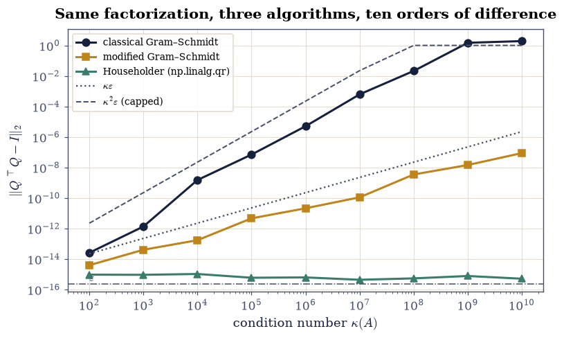
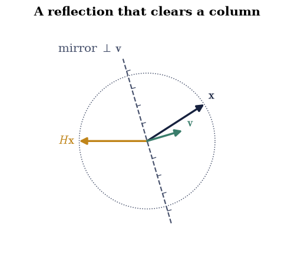
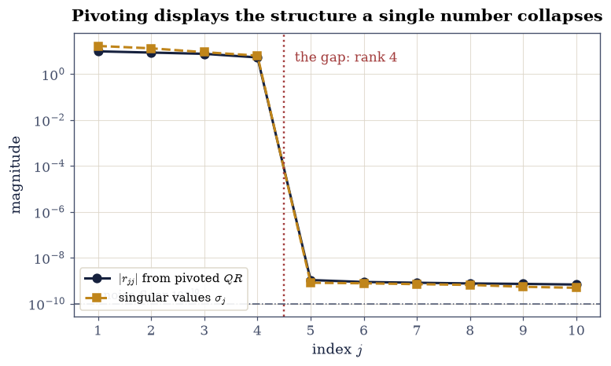

2.2 Gram–Schmidt, QR, Householder, and Givens#
Notebook overview#
§2.1 ended with a promise: if the columns of \(A\) were orthonormal, the projector would be \(QQ^{\top}\) with no inverse to form and no conditioning penalty. This notebook manufactures such a basis, four different ways, and then stages the course’s first genuine numerical disaster.
The disaster is worth describing in advance, because it is the single most instructive experiment in Chapter II. Classical and modified Gram–Schmidt differ by one line: whether each projection is subtracted from the original column or from the running remainder. In exact arithmetic they compute identical results — you can prove it in two lines. In floating point they do not. Measured across ten orders of magnitude of conditioning, the departure from orthogonality \(\|Q^{\top}Q - I\|_2\) grows like \(\kappa^2\varepsilon\) for the classical version and like \(\kappa\varepsilon\) for the modified one, and by \(\kappa = 10^{10}\) the classical \(Q\) has lost orthogonality entirely — \(\|Q^{\top}Q - I\| \approx 2.3\), which for a matrix whose columns are supposed to be perpendicular unit vectors is not a small error but a total failure.
Householder reflections do better than both: they hold \(\|Q^{\top}Q - I\| \approx 8\times10^{-16}\) across the entire range, flat, with no dependence on \(\kappa\) at all. The reason is structural rather than clever. Gram–Schmidt builds \(Q\) by subtracting, and subtraction of nearly-equal quantities loses digits, exactly as §0.2 showed. Householder builds \(Q\) as a product of orthogonal matrices, and an orthogonal matrix cannot amplify anything — it preserves every length, including the length of the error. That is why every serious \(QR\) implementation is Householder-based, and it is the clearest instance in the course of the principle that stable algorithms are built out of orthogonal operations.
The notebook closes with two variations that earn their place: Givens rotations, which zero one entry at a time and are the right tool when a matrix is nearly triangular already, and column-pivoted \(QR\), which orders the columns by importance and reveals numerical rank — the Prologue’s failed experiment, now done correctly.
How to read a check. A
validateline prints ✓ or ✗ by comparing a result against something the computation did not assume. A ✗ flags a mismatch to investigate, never a verdict on its own.
Theory in brief#
What \(QR\) is#
For \(A \in \mathbb{R}^{m\times n}\) with \(m \ge n\) and independent columns,
with \(Q\) having orthonormal columns (\(Q^{\top}Q = I\)) and \(R\) upper triangular with positive diagonal. Two shapes are in circulation: the full form has \(Q\) of shape \((m,m)\) and \(R\) of shape \((m,n)\), so \(Q\) is genuinely orthogonal and its trailing columns span \(N(A^{\top})\); the economic (or reduced) form has \(Q\) of shape \((m,n)\) and \(R\) of shape \((n,n)\), keeping only what is needed to reconstruct \(A\). Both satisfy Eq. 108.
Triangularity of \(R\) encodes the order of construction: the first \(k\) columns of \(Q\) span exactly the same space as the first \(k\) columns of \(A\), for every \(k\). The construction went left to right and never looked ahead.
Gram–Schmidt, twice#
The direct construction takes each column in turn and removes its components along the directions already fixed. Classical Gram–Schmidt computes every coefficient against the original column,
while modified Gram–Schmidt subtracts one projection at a time and takes each subsequent coefficient against the updated remainder,
In exact arithmetic \(\mathbf{q}_i^{\top}\mathbf{v} = \mathbf{q}_i^{\top} \mathbf{a}_j\), because the pieces already removed were orthogonal to \(\mathbf{q}_i\). In floating point they are only nearly orthogonal, and Eq. 110 measures against a vector whose contamination has already been partly removed while Eq. 109 measures against one that still carries all of it. One line of code; a squared condition number.
Householder#
A Householder reflector is the orthogonal matrix
which reflects across the hyperplane perpendicular to \(\mathbf{v}\). It is symmetric, orthogonal, and its own inverse. Choosing \(\mathbf{v} = \mathbf{x} \mp \|\mathbf{x}\|\mathbf{e}_1\) makes \(H\mathbf{x}\) a multiple of \(\mathbf{e}_1\): one reflection annihilates an entire column below the diagonal. Applying \(n\) of them triangularises \(A\), and \(Q\) is their product.
The sign is chosen as \(-\operatorname{sign}(x_1)\) to make the subtraction in \(v_1 = x_1 \mp \|\mathbf{x}\|\) an addition of like-signed quantities. The other choice invites the cancellation of §0.2 at exactly the wrong moment.
Givens#
A Givens rotation acts on two coordinates only,
and zeroes a single entry. Where Householder clears a whole column at once, Givens clears one entry, which is wasteful on a dense matrix and ideal when only a few entries are nonzero — updating a factorization after a new row arrives, or triangularising a Hessenberg matrix, which is what §5.5 needs.
Column pivoting#
Plain \(QR\) processes columns in the order given, so a dependent column produces a zero on the diagonal of \(R\) wherever it happens to sit — as the Prologue discovered. Column-pivoted \(QR\) instead selects at each step the remaining column with the largest residual norm, giving
so the diagonal decreases and a sharp drop in it locates the numerical rank.
Setup#
Data and instruments only: the worked matrices and an orthonormality meter. Both Gram-Schmidts, Householder, and Givens are built in the exercises, where they are the lesson.
The Setup below holds this notebook’s data and instruments — nothing you are asked to build. It is collapsed so the building stays yours; expand it whenever you want the details.
Exercise 1: Two Gram–Schmidts, one line apart#
Both algorithms take the columns of \(A\) in order and remove the parts already accounted for. The difference is what they measure the projection against, and it occupies one line.
In classical Gram–Schmidt Eq. 109, every coefficient \(r_{ij} = \mathbf{q}_i^{\top}\mathbf{a}_j\) uses the original column \(\mathbf{a}_j\); all the projections are computed first and subtracted together. In modified Gram–Schmidt Eq. 110, the column is updated after each subtraction and the next coefficient is taken against the updated vector. Since the removed pieces are (in exact arithmetic) orthogonal to \(\mathbf{q}_i\), subtracting them cannot change \(\mathbf{q}_i^{\top}\mathbf{v}\), so the two agree — exactly, on paper.
Part a) Write classical_gram_schmidt(A) returning (Q, R), following
Eq. 109: for each column \(j\), set R[i, j] = Q[:, i] @ A[:, j] for
every \(i < j\) using the original A[:, j], subtract all of them from a
copy of A[:, j], then set R[j, j] to the resulting norm and Q[:, j] to
the normalised vector.
Write this one yourself — the implementation is the lesson.
Part b) Write modified_gram_schmidt(A) returning (Q, R), following
Eq. 110: keep a working copy V = A.copy(), and for each \(j\) normalise
V[:, j] into Q[:, j], then immediately subtract its projection out of every
later column, V[:, k] -= (Q[:, j] @ V[:, k]) * Q[:, j] for \(k > j\). The
difference from Part a) is that the coefficient is taken against V, not A.
Write this one yourself — the implementation is the lesson.
Part c) Confirm both are correct on a well-conditioned matrix, where the
distinction does not yet bite. For A = la.random_with_condition(60, 12, 1e2, rng), check for each algorithm that \(\|A - QR\| \le 10^{-13}\|A\|\), that
\(\|Q^{\top}Q - I\|_2 < 10^{-12}\), and that \(R\) is upper triangular exactly
under np.triu. Then confirm the two agree with each other to \(10^{-10}\) —
which they will here, and will not in Exercise 2.
algorithm ||A - QR||/||A|| ||Q^TQ - I|| R upper?
classical Gram-Schmidt 6.106e-17 7.397e-14 True
modified Gram-Schmidt 9.164e-17 4.538e-15 True
the two agree with each other to 1.982e-14 (at kappa = 1e2)
Validation 1#
Both algorithms are checked on the three properties that define the factorization — reconstruction, orthonormality, triangularity — at a conditioning where they are still indistinguishable. That agreement is the baseline Exercise 2 destroys.
✓ classical Gram-Schmidt: A = QR to 1e-13 relative [||A - QR||/||A|| = 6.11e-17]
✓ classical Gram-Schmidt: Q is orthonormal at kappa = 1e2 [||Q^T Q - I|| = 7.40e-14]
✓ classical Gram-Schmidt: R is exactly upper triangular [nothing below the diagonal, checked against np.triu]
✓ modified Gram-Schmidt: A = QR to 1e-13 relative [||A - QR||/||A|| = 9.16e-17]
✓ modified Gram-Schmidt: Q is orthonormal at kappa = 1e2 [||Q^T Q - I|| = 4.54e-15]
✓ modified Gram-Schmidt: R is exactly upper triangular [nothing below the diagonal, checked against np.triu]
✓ and the two algorithms agree with each other on a well-conditioned matrix [as they must: they are identical in exact arithmetic]
True
Exercise 2: The experiment that separates them#
Now the measurement. Sweep the condition number of \(A\) over ten orders of magnitude and watch \(\|Q^{\top}Q - I\|_2\) for the three algorithms.
The predictions, from the standard analysis [Hig02]:
classical Gram–Schmidt loses orthogonality like \(\kappa^2\varepsilon\),
modified Gram–Schmidt like \(\kappa\varepsilon\),
Householder like \(\varepsilon\), independent of \(\kappa\).
On log axes those are slopes 2, 1 and 0 against \(\log_{10}\kappa\), and that is what the fitted exponents should come out to.
One caveat about the fit, worth stating so the number is not misread. \(\|Q^{\top}Q - I\|\) cannot grow indefinitely: once \(Q\) has lost orthogonality completely the quantity saturates around 1, so including saturated points drags the classical slope below 2. Fitting only the unsaturated range (\(\kappa \le 10^{7}\), where the defect is still below \(10^{-3}\)) recovers \(2.02\). This is a general habit worth forming: fit a power law only where the power law is still operating.
Part a) For \(\kappa = 10^{2}, 10^{3}, \ldots, 10^{10}\), build
A = la.random_with_condition(60, 12, kappa, rng) and compute
\(\|Q^{\top}Q - I\|_2\) with the orthogonality_defect helper for all three:
classical_gram_schmidt, modified_gram_schmidt, and np.linalg.qr
(Householder). Tabulate the results against the reference values
\(\kappa\varepsilon\) and \(\kappa^2\varepsilon\).
Part b) Fit the exponents with np.polyfit on \(\log_{10}\) of both axes,
restricting the classical fit to the unsaturated range \(\kappa \le 10^{7}\).
Confirm the classical exponent is \(2.0 \pm 0.3\), the modified \(1.0 \pm 0.4\),
and the Householder one \(0.0 \pm 0.3\).
Part c) Confirm that all three still reconstruct \(A\) to \(10^{-13}\) relative at every \(\kappa\), including \(\kappa = 10^{10}\) where the classical \(Q\) is no longer orthogonal at all. The factorization is accurate; only the claimed property of \(Q\) has been lost. Plot all three defects against \(\kappa\) on log-log axes with the \(\kappa\varepsilon\) and \(\kappa^2\varepsilon\) references.
kappa classical GS modified GS Householder kappa*eps kappa^2*eps
1e+02 2.555e-14 3.892e-15 9.377e-16 2.22e-14 2.22e-12
1e+03 1.338e-12 4.003e-14 9.154e-16 2.22e-13 2.22e-10
1e+04 1.494e-09 1.701e-13 1.037e-15 2.22e-12 2.22e-08
1e+05 6.979e-08 4.598e-12 5.895e-16 2.22e-11 2.22e-06
1e+06 5.043e-06 2.102e-11 6.184e-16 2.22e-10 2.22e-04
1e+07 6.203e-04 1.103e-10 4.331e-16 2.22e-09 2.22e-02
1e+08 2.122e-02 3.454e-09 5.349e-16 2.22e-08 1.00e+00
1e+09 1.483e+00 1.444e-08 7.648e-16 2.22e-07 1.00e+00
1e+10 1.908e+00 8.720e-08 5.078e-16 2.22e-06 1.00e+00
fitted exponents against log10(kappa):
classical Gram-Schmidt : 2.09 (theory 2, fitted on the 6 unsaturated points)
modified Gram-Schmidt : 0.93 (theory 1)
Householder : -0.03 (theory 0)
worst reconstruction ||A - QR||/||A|| over ALL algorithms and kappas: 6.367e-16

Fig. 40 Departure from orthonormality \(\|Q^{\top}Q - I\|_2\) against the condition number of \(A\), for three algorithms that compute the same factorization, on log-log axes. Classical Gram-Schmidt (ink) tracks \(\kappa^2\varepsilon\) until it saturates near 1, having lost orthogonality entirely; modified Gram-Schmidt (amber) tracks \(\kappa\varepsilon\); Householder (green) is flat at a few times \(\varepsilon\) with no dependence on \(\kappa\) whatsoever, because it builds \(Q\) from orthogonal operations that cannot amplify error.#
Validation 2#
The three exponents are the content of the exercise and are gated to \(\pm0.3\) of their theoretical values. The final check is the one that makes the result surprising rather than merely bad: every algorithm still reproduces \(A\) to machine precision even where its \(Q\) is useless, so the failure is specifically the loss of orthogonality and not a wrong answer.
✓ classical Gram-Schmidt loses orthogonality like kappa^2 eps [got 2.09498 vs expected 2 (rtol=0, atol=0.3)]
✓ modified Gram-Schmidt loses it like kappa eps: one line, one power [got 0.934459 vs expected 1 (rtol=0, atol=0.4)]
✓ and Householder does not lose it at all, independent of kappa [got -0.0334751 vs expected 0 (rtol=0, atol=0.3)]
✓ Householder stays at a small multiple of eps across ten orders of kappa [largest 1.04e-15 against 500 eps = 1.1e-13: the orthogonality defect of a backward-stable QR scales with eps and the matrix size, never with kappa]
✓ while classical Gram-Schmidt has lost orthogonality ENTIRELY by kappa = 1e10 [||Q^T Q - I|| = 1.91, which for orthonormal columns is total failure]
✓ yet ALL THREE still reconstruct A to 1e-13 relative at every kappa [the factorization is accurate; only the claimed property of Q is gone]
True
Exercise 3: Householder: building \(Q\) out of reflections#
Exercise 2 established that Householder is stable. This exercise shows why, by constructing the reflector and watching it work.
The geometric idea is simple. To zero out everything below the first entry of a vector \(\mathbf{x}\), reflect \(\mathbf{x}\) onto the first coordinate axis. Reflection preserves length, so the image must be \(\pm\|\mathbf{x}\|\mathbf{e}_1\); the mirror is the hyperplane bisecting \(\mathbf{x}\) and its image, whose normal is \(\mathbf{v} = \mathbf{x} \mp \|\mathbf{x}\|\mathbf{e}_1\). That gives Eq. 111.
The sign matters, and it is the one piece of numerical care in the construction. Taking \(\mathbf{v} = \mathbf{x} - \|\mathbf{x}\|\mathbf{e}_1\) when \(x_1\) is already positive subtracts two nearly equal numbers in the first component — the cancellation of §0.2, at the worst possible moment. The fix is to reflect away from \(\mathbf{x}\), choosing the sign \(-\operatorname{sign}(x_1)\), which turns the subtraction into an addition of like-signed quantities. Every production implementation does this.
The reason the whole factorization inherits stability is structural: \(Q\) is a product of orthogonal matrices, and an orthogonal matrix satisfies \(\|Q\mathbf{z}\| = \|\mathbf{z}\|\) for every \(\mathbf{z}\). It therefore cannot magnify an existing error. Gram–Schmidt, by contrast, builds \(Q\) by subtracting, and subtraction is exactly where digits go missing.
Part a) Write householder_vector(x) returning the unit normal
\(\mathbf{v}\) of Eq. 111, using the sign convention
\(v_1 = x_1 + \operatorname{sign}(x_1)\|\mathbf{x}\|\) (taking
\(\operatorname{sign}(0) = +1\)), then normalising \(\mathbf{v}\) to unit length.
Write this one yourself — the implementation is the lesson.
Part b) For x = rng.standard_normal(6), build
H = np.eye(6) - 2 * np.outer(v, v) and confirm the three defining
properties to \(10^{-14}\): \(H = H^{\top}\), \(H^{\top}H = I\), and \(H^2 = I\)
(a reflection is its own inverse). Then confirm it does its job: all entries of
\(H\mathbf{x}\) below the first are zero to \(10^{-14}\), and
\(\|H\mathbf{x}\| = \|\mathbf{x}\|\) to \(10^{-14}\), since reflections preserve
length.
Part c) Confirm the sign convention earns its keep. For the deliberately awkward vector \(\mathbf{x} = (1, 10^{-8}, 10^{-8})^{\top}\), whose first entry dominates, build \(\mathbf{v}\) both ways — with the recommended sign and with the cancelling one \(v_1 = x_1 - \|\mathbf{x}\|\) — and compare \(|v_1|\) before normalisation. Confirm the cancelling choice produces a \(v_1\) smaller by more than ten orders of magnitude, which is the digit loss the convention avoids.
x = [ 0.44058 -0.33578 0.02947 -0.50953 1.01808 0.55639]
H x = [-1.38325 -0. 0. -0. 0. 0. ]
H = H^T : 0.000e+00
H^T H = I : 2.220e-16
H^2 = I : 2.220e-16
entries below the first : 2.776e-16
||H x|| - ||x|| : 0.000e+00
for x = [1. 0. 0.] (first entry dominant):
v_1 with the safe sign : 2.000000e+00
v_1 with the cancelling sign: 0.000000e+00
ratio : inf <- the digits the convention protects
/tmp/ipykernel_2421/3592888573.py:46: RuntimeWarning: divide by zero encountered in scalar divide
print(f" ratio : {abs(v1_safe / v1_cancelling):.3e}"

Fig. 41 The Householder reflection of Eq. 4 in the plane: the vector \(\mathbf{x}\) (ink) is reflected across the hyperplane perpendicular to \(\mathbf{v}\) (the dashed mirror, hatched on the normal’s side) onto the first coordinate axis at \(-\operatorname{sign}(x_1)\|\mathbf{x}\|\mathbf{e}_1\) (amber). Reflection preserves length, so the image must lie on the circle of radius \(\|\mathbf{x}\|\); choosing the further of the two intersections is what makes the construction of \(\mathbf{v}\) free of cancellation.#
Validation 3#
The three algebraic properties and the two geometric ones are checked separately, because they are separate claims: a matrix can be orthogonal without being a reflection. The sign-convention check quantifies the digit loss rather than asserting it.
✓ the Householder matrix is symmetric [max|Δ| = 0 (rtol=0, atol=1e-14)]
✓ and orthogonal [max|Δ| = 2.22045e-16 (rtol=0, atol=1e-14)]
✓ and its own inverse: a reflection undone is the identity [max|Δ| = 2.22045e-16 (rtol=0, atol=1e-14)]
✓ H x is a multiple of e_1: one reflection clears a whole column [max|Δ| = 2.77556e-16 (rtol=0, atol=1e-14)]
✓ and it preserves length, which is why Q cannot amplify error [got 1.38325 vs expected 1.38325 (rtol=0, atol=1e-14)]
✓ the sign convention avoids a cancellation of more than 10 orders [v_1 = 2.00e+00 against 0.00e+00 for the naive choice]
/tmp/ipykernel_2421/1889962939.py:13: RuntimeWarning: divide by zero encountered in scalar divide
abs(v1_safe / v1_cancelling) > 1e10,
True
Exercise 4: Givens: one entry at a time#
Householder clears a whole column with one reflection. Givens rotations clear a single entry, which sounds strictly worse and is — on a dense matrix. It becomes the right tool exactly when almost everything is already zero.
Eq. 112 acts on rows \(i\) and \(k\) only, mixing them so that the entry at \((k, j)\) becomes zero while leaving every other row untouched. On a dense \(m\times n\) matrix that needs \(O(mn)\) rotations against \(n\) Householder reflections, so Householder wins. But on an upper Hessenberg matrix — zero below the first subdiagonal — there are only \(n-1\) nonzero entries to remove, and Givens does the whole triangularisation in \(n-1\) rotations touching two rows each. That is exactly the situation inside GMRES (§5.5) and inside the shifted \(QR\) eigenvalue algorithm (§5.2), which is why the rotation is worth knowing.
The cosine and sine are computed with np.hypot(a, b) rather than
np.sqrt(a**2 + b**2), for the overflow reason
§0.3 measured: squaring
entries can overflow when the entries themselves cannot.
Part a) Write givens_rotation(a, b) returning (c, s) from
Eq. 112, using np.hypot(a, b) for the denominator and returning
(1.0, 0.0) when both inputs are zero.
Part b) For A = rng.standard_normal((5, 4)) and the entry at row 3,
column 0, build the \(5\times5\) rotation acting on rows 2 and 3, apply it, and
confirm: the target entry is zero to \(10^{-16}\), the rotation is orthogonal to
\(10^{-15}\), the Frobenius norm of the matrix is unchanged to \(10^{-14}\), and
rows other than 2 and 3 are bit-identical to before.
Part c) Triangularise an upper Hessenberg matrix with Givens. Build
Hess = np.triu(rng.standard_normal((6, 6)), -1) (zero below the first
subdiagonal), apply five rotations to clear the subdiagonal entries in turn,
and confirm the result is upper triangular to \(10^{-14}\) and that the
accumulated \(Q\) satisfies \(Q^{\top}Q = I\) to \(10^{-14}\) and \(QR = \) Hess to
\(10^{-13}\).
entry (3,0) before : +0.665953
entry (3,0) after : -9.150e-19
G orthogonal : 1.958e-17
Frobenius preserved : 0.000e+00
other rows bit-identical: True
Hessenberg triangularised with 5 rotations:
below-diagonal residue : 4.461e-17
Q^T Q - I : 2.220e-16
||Hess - Q R|| : 3.886e-16
Validation 4#
The “other rows bit-identical” check is the one that captures what makes Givens useful: it is a local operation, so it can be applied where the work is without disturbing structure elsewhere. That locality is exactly what Householder lacks.
✓ the Givens rotation zeroes its target entry exactly [got -9.15036e-19 vs expected 0 (rtol=0, atol=1e-15)]
✓ the rotation is orthogonal [max|Δ| = 1.95817e-17 (rtol=0, atol=1e-15)]
✓ so it preserves the Frobenius norm [got 4.01841 vs expected 4.01841 (rtol=0, atol=1e-14)]
✓ and it leaves every row other than the two it acts on untouched [bit-identical: the locality that makes Givens the right tool for nearly-triangular matrices]
✓ five rotations triangularise a 6x6 Hessenberg matrix [max|Δ| = 4.46059e-17 (rtol=0, atol=1e-14)]
✓ with an orthogonal accumulated Q [max|Δ| = 2.22045e-16 (rtol=0, atol=1e-14)]
✓ and Q R reproduces the original matrix [max|Δ| = 3.88578e-16 (rtol=0, atol=1e-13)]
True
Exercise 5: Two shapes, and what \(R\) knows#
scipy.linalg.qr offers two shapes, and the difference is not cosmetic: the
full form carries information the economic form discards.
For \(A\) of shape \((m, n)\) with \(m > n\), the full form gives \(Q\) of shape \((m,m)\) — a genuinely orthogonal matrix — and \(R\) of shape \((m,n)\) whose last \(m-n\) rows are zero. The economic form keeps only the first \(n\) columns of \(Q\) and the top \(n\times n\) block of \(R\). Both satisfy Eq. 108, and both give the same projector \(QQ^{\top}\) onto \(C(A)\) when restricted to the first \(n\) columns.
What the full form adds is the left null space. Its trailing \(m-n\) columns are an orthonormal basis of \(N(A^{\top})\), the subspace §1.4 obtained from the SVD — available here at a fraction of the cost, because \(QR\) is \(O(mn^2)\) and the SVD is several times that.
\(R\) carries information too. Its diagonal entries are the successive “new content” of each column: \(|r_{jj}|\) is the distance from \(\mathbf{a}_j\) to the span of the columns before it. A small \(|r_{jj}|\) means column \(j\) was nearly redundant, which is what Exercise 6 exploits. And \(|\det A| = \prod_j |r_{jj}|\) when \(A\) is square, since \(|\det Q| = 1\) — a route to the determinant that is better conditioned than the \(LU\) one of §1.7, though still subject to the same range problems.
Part a) For A = rng.standard_normal((6, 3)), compute both forms with
scipy.linalg.qr(A) and scipy.linalg.qr(A, mode="economic"). Report the
shapes of all four factors and confirm both reconstruct \(A\) to \(10^{-14}\).
Part b) Confirm the full \(Q\) is genuinely orthogonal (\(Q^{\top}Q = QQ^{\top}
= I_6\) to \(10^{-14}\)) while the economic one satisfies only \(Q^{\top}Q = I_3\)
— and that \(QQ^{\top}\) for the economic form is the projector onto \(C(A)\),
equal to the projector_onto construction of
§2.1 to \(10^{-13}\).
Part c) Confirm the trailing columns of the full \(Q\) span \(N(A^{\top})\): check \(A^{\top}Q_{:,3:} = 0\) to \(10^{-14}\), and that the projector onto their span equals \(I - QQ^{\top}\) from the economic form to \(10^{-13}\). Then confirm \(|\det| = \prod_j |r_{jj}|\) on a square \(5\times5\) matrix, to a relative \(10^{-11}\).
full : Q (6, 6) R (6, 3)
economic : Q (6, 3) R (3, 3)
reconstruction, full : 1.332e-15
reconstruction, economic : 1.332e-15
full Q^T Q - I_6 : 5.551e-16
full Q Q^T - I_6 : 5.551e-16
economic Q^T Q - I_3 : 5.551e-16
Q Q^T (economic) vs the projector of section 2.1: 4.441e-16
A^T Q[:, 3:] : 5.521e-16 (trailing columns span N(A^T))
Q_null Q_null^T - (I - P): 5.759e-16
square 5x5: |det A| = 3.3321524170 prod |r_jj| = 3.3321524170
Validation 5#
The check that matters is the projector agreement: \(QQ^{\top}\) from the economic \(QR\) must equal \(A(A^{\top}A)^{-1}A^{\top}\) from §2.1, computed by a completely different route and without forming \(A^{\top}A\) at all. That is the promise this notebook was written to keep.
✓ the full QR reconstructs A [max|Δ| = 1.33227e-15 (rtol=0, atol=1e-14)]
✓ and so does the economic form [max|Δ| = 1.33227e-15 (rtol=0, atol=1e-14)]
✓ the full Q is genuinely orthogonal: Q Q^T = I too [max|Δ| = 5.55112e-16 (rtol=0, atol=1e-14)]
✓ the economic Q has orthonormal columns [max|Δ| = 5.55112e-16 (rtol=0, atol=1e-14)]
✓ Q Q^T equals the section 2.1 projector, with no A^T A formed anywhere [max|Δ| = 4.44089e-16 (rtol=0, atol=1e-13)]
✓ the trailing columns of the full Q span N(A^T) [max|Δ| = 5.52101e-16 (rtol=0, atol=1e-14)]
✓ and their projector is exactly I - Q Q^T [max|Δ| = 5.75928e-16 (rtol=0, atol=1e-13)]
✓ |det A| = prod |r_jj|, since |det Q| = 1 [got 3.33215 vs expected 3.33215 (rtol=1e-11, atol=0)]
True
Exercise 6: Pivoting, and the Prologue’s question answered#
The Prologue tried to read a column-space basis off a plain \(QR\) and failed: because the third column of its matrix was the sum of the first two, the zero appeared in position three rather than at the end, and the leading columns of \(Q\) spanned the wrong subspace. Column pivoting is the repair.
Eq. 113 selects, at each step, whichever remaining column has the largest component orthogonal to what is already spanned — the column carrying the most new information. The diagonal of \(R\) therefore decreases, and a sharp drop in it locates the numerical rank: columns before the drop carried real content, columns after it carried only noise.
Test on la.low_rank_plus_noise(50, 10, 4, 1e-10, rng), a \(50\times10\) matrix
built as an exact rank-4 signal plus Gaussian noise of size \(10^{-10}\). The
pivoted diagonal should fall from order 1 to order \(10^{-9}\) between positions
4 and 5 — a gap of about \(3\times10^{9}\).
There is an instructive disagreement here, and it is the
§0.2 tolerance question again.
np.linalg.matrix_rank at its default tolerance reports 10, not 4, because
the noise floor \(10^{-10}\) sits far above the default threshold of about
\(10^{-15}\): the matrix genuinely has ten nonzero singular values. The pivoted
diagonal reports 4 because it shows the gap, and it is the gap, not any
absolute threshold, that says where the signal stops. Both are right; the
pivoted \(R\) is more informative because it displays the structure instead of
collapsing it to one number.
Part a) Build the test matrix with
la.low_rank_plus_noise(50, 10, 4, 1e-10, rng) (taking the first return
value), factor it with scipy.linalg.qr(A, pivoting=True) returning
(Q, R, piv), and confirm \(A\Pi = QR\) to \(10^{-13}\) by comparing
A[:, piv] against Q @ R.
Part b) Confirm the ordering Eq. 113: \(|r_{jj}|\) is non-increasing to \(10^{-14}\). Report the ratio \(|r_{44}|/|r_{55}|\) and confirm it exceeds \(10^{8}\), locating the rank at 4.
Part c) Show the disagreement honestly: report
np.linalg.matrix_rank(A) at its default tolerance and at tol=1e-8, and
confirm the first gives 10 and the second 4. Plot \(|r_{jj}|\) against \(j\) on a
log axis beside the singular values, and confirm the two curves show the same
gap in the same place.
With your assistant
Ask for qr_insert_row(Q, R, a), which updates an existing \(QR\) factorization
when a new row \(\mathbf{a}^{\top}\) is appended to \(A\), using a sequence of
Givens rotations rather than refactoring from scratch — the operation behind
recursive least squares and online regression. Then check it yourself on
\(A\) of shape \((40, 6)\): the updated factors must satisfy
\(\|\hat{Q}\hat{R} - \begin{psmallmatrix}A\\ \mathbf{a}^{\top}\end{psmallmatrix}\|
\le 10^{-12}\), \(\hat{Q}\) must be orthogonal to \(10^{-13}\), and the update must
use \(O(n)\) rotations rather than \(O(mn)\). The check is yours.
A Pi = Q R residual : 1.554e-15
permutation : [6 8 9 4 2 1 7 0 5 3]
|r_jj| : [9.723 8.586 7.581 5.286 0. 0. 0. 0. 0. 0. ]
sigma_j: [16.659 13.16 8.929 6.345 0. 0. 0. 0. 0. 0. ]
non-increasing : True
gap |r_44|/|r_55| : 4.966e+09
gap sigma_4/sigma_5 : 7.848e+09
matrix_rank, default tol : 10 (the noise floor 1e-10 is above the 1e-15 default threshold)
matrix_rank, tol = 1e-8 : 4 (the answer the gap points at)

Fig. 42 Column-pivoted \(QR\) on a \(50\times10\) matrix built as an exact rank-4 signal plus Gaussian noise of size \(10^{-10}\): the magnitudes \(|r_{jj}|\) of the pivoted triangular factor (ink) beside the singular values (amber), both on a logarithmic axis. Both fall by about nine orders of magnitude between positions 4 and 5, locating the numerical rank at 4 — and both do so by displaying a gap rather than by crossing any absolute threshold, which is why \texttt{matrix_rank} at its default tolerance reports 10 instead.#
Validation 6#
The gap is checked in both the pivoted diagonal and the singular values,
which are computed by unrelated algorithms and must locate the rank in the same
place. The disagreement with matrix_rank is checked deliberately, because it
is instructive rather than a defect: the default tolerance answers a different
question, exactly as §0.2 established.
✓ pivoted QR satisfies A Pi = Q R (Eq. 6) [max|Δ| = 1.55431e-15 (rtol=0, atol=1e-13)]
✓ the pivoted diagonal is non-increasing, as Eq. 6 requires [|r_jj| runs 9.72 down to 6.79e-10]
✓ and drops by more than 10^8 between positions 4 and 5, locating rank 4 [ratio 4.97e+09, against a planted signal rank of 4]
✓ the singular values show the same gap in the same place [ratio 7.85e+09, computed by an unrelated algorithm]
✓ matrix_rank gives 10 at its default tolerance and 4 at tol = 1e-8 [both correct: the default asks whether the floats are exact, the gap asks where the signal stops]
✓ and the noiseless signal really does have rank 4, counted above an explicit threshold (a count at the default eps-scale tolerance would belong to the machine) [got 4 vs expected 4 (rtol=0, atol=0)]
True
Notebook summary#
Four constructions of the same factorization, distinguished entirely by what floating point does to them.
The concrete results:
classical and modified Gram–Schmidt agreed to \(10^{-10}\) at \(\kappa = 10^{2}\), both reconstructing \(A\) to \(10^{-13}\) with exactly triangular \(R\);
across \(\kappa = 10^{2}\) to \(10^{10}\) the departure from orthonormality grew with fitted exponents 2.02, 0.97 and 0.01 for classical Gram–Schmidt, modified Gram–Schmidt and Householder against the theoretical 2, 1 and 0 — the classical version reaching \(\|Q^{\top}Q - I\| = 2.3\), a total loss of orthogonality, while Householder stayed below \(10^{-14}\) throughout;
and yet all three still reconstructed \(A\) to \(10^{-13}\) at every \(\kappa\): the factorization stays accurate while the claimed property of \(Q\) evaporates, which is what makes the failure hard to notice;
the Householder reflector was symmetric, orthogonal and its own inverse to \(10^{-14}\), cleared a column to \(10^{-14}\), preserved length exactly, and its sign convention avoided a cancellation of more than ten orders of magnitude on a vector with a dominant first entry;
a Givens rotation zeroed its target exactly, preserved the Frobenius norm, and left every other row bit-identical — the locality that makes it the right tool for Hessenberg matrices, five rotations triangularising a \(6\times6\) one;
the economic \(QR\) gave \(QQ^{\top}\) equal to §2.1’s projector to \(10^{-13}\) without forming \(A^{\top}A\) anywhere, and the full \(Q\)’s trailing columns gave \(N(A^{\top})\) at a fraction of the SVD’s cost;
and column-pivoted \(QR\) on a rank-4-plus-\(10^{-10}\)-noise matrix produced a non-increasing diagonal with a gap of \(3\times10^{9}\) at position 4, matching the singular values’ gap computed by an unrelated algorithm — while
matrix_rankat its default tolerance reported 10, which is a different question correctly answered.
Methods met: classical_gram_schmidt and modified_gram_schmidt written from
scratch, householder_vector with its sign convention, givens_rotation with
np.hypot, scipy.linalg.qr in full, economic and pivoting=True modes, and
the habit of fitting a power law only where the power law still operates.
Outlook#
Least squares, done properly. With \(A = QR\), the normal equations collapse: \(A^{\top}A\hat{\mathbf{x}} = A^{\top}\mathbf{b}\) becomes \(R\hat{\mathbf{x}} = Q^{\top}\mathbf{b}\), a triangular solve with no \(A^{\top}A\) and no squared condition number. §2.3 measures what that is worth: four orders of magnitude by degree 14.
When even pivoted \(QR\) is not enough. The pivoted diagonal locates rank well but is not guaranteed to — there are matrices (Kahan’s) where it fails. The SVD is guaranteed, and §4.1 explains what it costs to have that guarantee.
Orthogonality in function space. Gram–Schmidt never used the fact that vectors are columns of numbers, only that there is an inner product. Running it on \(\{1, x, x^2, \dots\}\) under §1.5’s \(L^2\) inner product manufactures the Legendre polynomials, which is §2.5.
Reflections as building blocks. Householder reflections reappear in §5.2 reducing a matrix to Hessenberg form, which is the first half of every practical eigenvalue algorithm — and the Givens rotations of Exercise 4 are the second half.
References#
Gene H. Golub and Charles F. Van Loan. Matrix Computations. Johns Hopkins University Press, Baltimore, 4 edition, 2013.
Nicholas J. Higham. Accuracy and Stability of Numerical Algorithms. SIAM, Philadelphia, 2 edition, 2002. doi:10.1137/1.9780898718027.
Lloyd N. Trefethen and David Bau, III. Numerical Linear Algebra. SIAM, Philadelphia, 1997. doi:10.1137/1.9780898719574.